Multi-Edge Flange command bar
- Flange Options
-
Accesses the Multi-Edge Flange Options dialog box so you can set the flange construction options.
- Main Steps
- Edge Step
-
Selects the edge(s) to create the flange(s).
- Parameter Step
-
Defines parameters for flange creation.
- Offset Step
-
Offsets the flange(s) from the selected edge(s) . You can offset a flange towards the part or away from the part.
- Finish/Cancel
-
This button changes function as you move through the feature construction process. The Finish button constructs the feature using input provided in the other steps. Once you construct the feature, you can edit it by re-selecting the appropriate step on the command bar. The Cancel button discards any input and exits the command.
- Edge Step
-
Selects the edge(s) used to create the flange(s).
- Select
-
Sets the method of selecting a edge.
-
Single—Selects one or more individual edges.
-
Chain—Selects an endpoint connected set of edges by selecting one of the edges in the chain.
-
- Parameter Step
-
- Width
-
Specifies the method for creating the flange width. If you select only one edge, all the options are available. If you select multiple edges, only the Full Width and Centered options are available.
Full Width–Constructs the flange(s) along the full width of the edge you select.
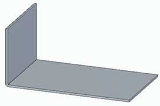
Centered–Constructs a flange(s) that is one-third of the edge width and is centered on the edge you select. You can edit the dimensional value of the flange width later and the flange remains centered on the edge.
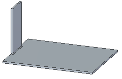
At End–Constructs the flange starting at the end you select.
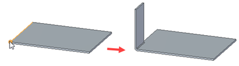
From Both Ends–Constructs the flange width using dimensions from both ends of the edge you select. The default width is one-third of the edge width.
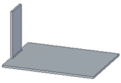
From End–Constructs the flange using a dimension from the end of the edge you select. When you select this option you must also specify the end of the edge from which you want the dimension to originate.
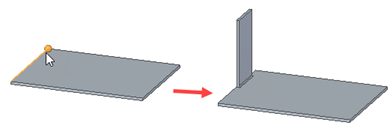
- Measurement Point
-
Specifies if the measurement is from the inside or the outside of the material to the flange length.
-
Measurement inside–Measures from the inside of the material to the flange length.
-
Measurement outside–Measures from the outside of the material to the flange length.
-
- Material Side
-
Specifies the location of material creation.
-
Material Inside– Specifies that no material is added to the selected face to create the flange. Overall part length remains the same.
-
Material Outside– Specifies that material equal to the material thickness is added to the selected face to create the flange. Overall part length increases by the material thickness.
-
Bend Outside–Specifies that material equal to the material thickness and the bend radius is added to the selected face to create the flange. Overall part length increases by the material thickness plus the bend radius.
-
- Trim
-
Trims flanges at the intersection point.
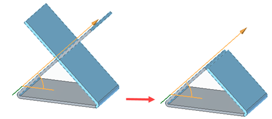
The following illustrates examples with the option cleared and selected.
Trim option cleared
Trim option selected
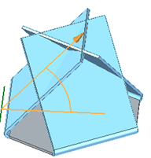
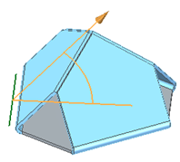
You can trim the intersection of:
Flanges intersecting with existing flanges
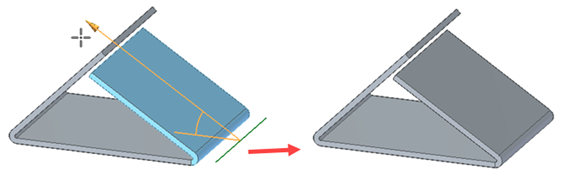
Adjacent flanges
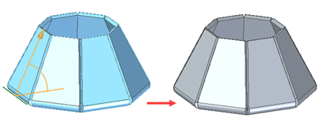
Non-adjacent flanges
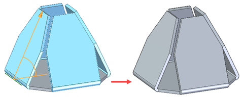
Coplanar flanges
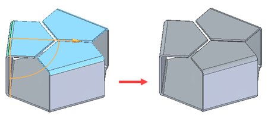
Non-coplanar flanges
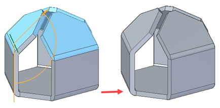
Note:You can not trim intersections that include bends of flanges.
- Gap
-
Specifies a gap where flanges intersect.
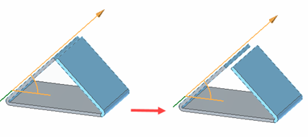
- Keypoints
-
Sets the type of keypoint you can select to define a feature extent or to position a new reference plane. Use this option to define the feature extent or the location of the reference plane using a keypoint on other existing geometry. The available keypoint options are specific to the command and workflow you use.

Selects a center or end point.
Selects any keypoint.
Selects an end point.
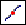
Selects a midpoint.
Selects the center point of a circle or arc.
Selects a tangency point on an analytic curved face such as a cylinder, sphere, torus, or cone.
Selects a silhouette point.
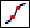
Selects an edit point on a curve.

Turns off keypoint location.
- Distance
-
Sets the length of the flange. This box accepts only positive values.
- Step
-
Increments or decrements the value displayed in the Distance box. For example, typing a step value of 0.25 and moving the cursor away from the start point would increment the flange length from 0.25 to 0.5, 0.75, and so on.
- Angle
-
Specifies the bend angle for the flange. The value must be greater than zero and less than 180 degrees.
- Name
-
Displays the feature name. Feature names are assigned automatically. You can edit the name by typing a new name in the box on the command bar or by selecting the feature and using the Rename command on the shortcut menu.
- Offset Step Options
-
- Offset Flange
-
Offsets the flange(s) by a specified distance from the selected edge.
- No Offset
-
Creates a flange with no offset from the selected edge.
How do I
Construct a flangeLearn more
Constructing flangesLook up more details
Flange commandFlange command bar
Flange Options dialog box
Multi-Edge Flange Options dialog box
General tab (Multi-Edge Flange Options dialog box)
Miters and Corners tab (Multi-Edge Flange Options dialog box)